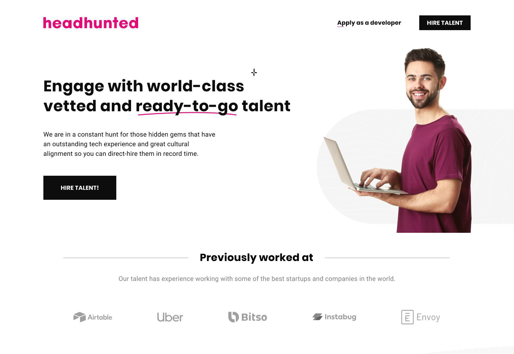
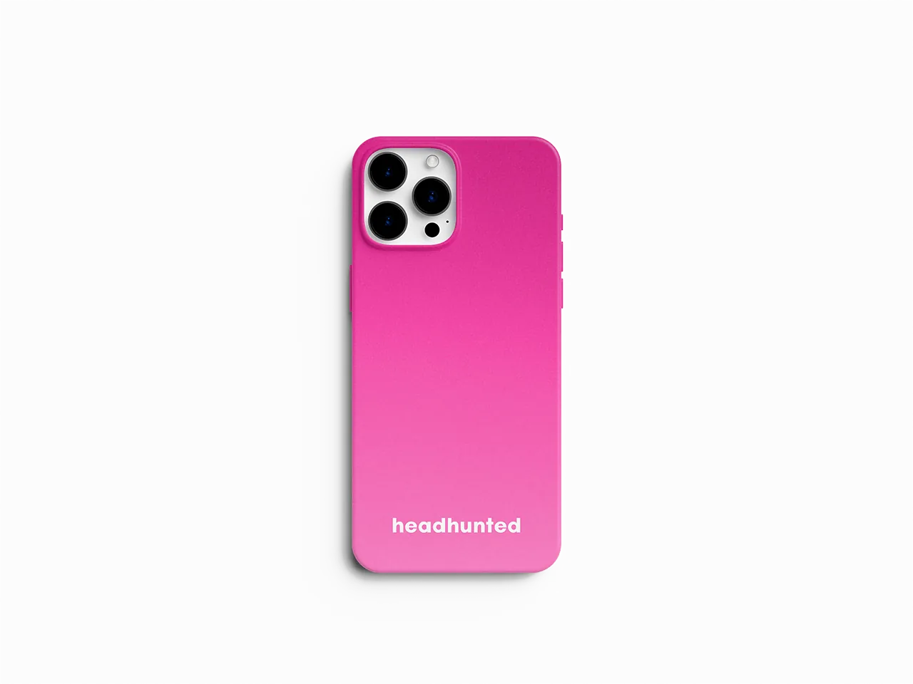

UI and frontend-ready design for Headhunted — a nonprofit supporting education and aid programs for children, single mothers, and individuals in need. The goal: a website that makes the mission immediately legible, builds trust without friction, and delivers a component system clean enough to maintain and extend.

Headhunted needed more than a website — it needed a credibility system. Nonprofits live or die on trust signals: visitors decide within seconds whether an organization is legitimate, focused, and worth their attention or donation. The design challenge wasn't visual complexity — it was clarity under constraint: limited content, no established brand equity, and an audience that includes skeptical first-time visitors alongside returning supporters.
I owned end-to-end: brand direction, information architecture, UI system, component documentation, and design QA through implementation — working in close collaboration with Smarttie, the development partner.
Before any visual work, the discovery phase mapped the audiences and their intents — the two most important inputs for IA decisions on a mission-driven site. Four distinct user intents emerged:
I reviewed a benchmark set of nonprofit websites — screening for content patterns that correlated with trustworthiness perception: impact numbers, beneficiary storytelling, organizational transparency, and navigational clarity. The findings directly informed the page hierarchy and what content appeared above the fold on each template.
The brand system was built for warmth and precision in equal measure — avoiding the visual clichés of nonprofit design (heavy stock photography, primary-color palettes, motivational-poster typography) while still feeling approachable and mission-driven.
Typography decisions were made explicitly rather than intuitively. The type scale uses a modular ratio to create clear visual hierarchy across heading levels — ensuring users can scan the page structure without reading every word. Line-height values were set to 1.6–1.75 across body text to support readability for users with dyslexia or reading fatigue. Font weight progression (400 → 500 → 600) replaces size inflation as the primary differentiator between content levels, keeping the system legible at all viewport sizes without overscaling.
Color usage was intentionally restrained: a primary action color applied to interactive elements only, a neutral surface palette that lets photography and content carry emotional weight, and a secondary accent reserved for impact numbers and pull quotes — not decorative use.
I built the UI as a component system rather than a collection of pages — ensuring that every pattern had a reusable structure, defined states, and documented behavior before being handed to developers. Even at this scale, treating the UI as a system rather than a set of one-off screens prevents implementation divergence and makes future content updates maintainable without a designer in the loop.
The component inventory covered: navigation (desktop + mobile), hero templates, program cards, testimonial blocks, stats/impact row, form (contact + referral), footer, and a CTA section in two variants. Each component was documented with spacing values, responsive behavior at three breakpoints, and interaction states (default, hover, focus, error).
The component system rendered live across contexts — desktop at 1440px and iOS Safari at mobile breakpoint. Same codebase, different viewport: the three-breakpoint responsive system is observable in production, not theoretical in the spec. Every spacing value, font-weight step, and focus ring designed in Figma is now executing in HTML and CSS.
For a nonprofit audience, accessibility is not optional — it directly affects whether the people the organization serves can actually use the site. The design was evaluated against WCAG 2.1 AA throughout, with specific attention to:
Working with Smarttie, I structured the handoff to eliminate ambiguity — the most common source of implementation drift. Rather than delivering a static Figma file and a hope, the handoff package included:
I ran two rounds of design QA during implementation: one mid-build to catch early drift, and one pre-launch to validate cross-browser and cross-device consistency. The QA sessions produced a tracked issue list — not verbal feedback — so fixes were verifiable.
The delivered website gives Headhunted a credible, maintainable presence that supports community awareness, program discovery, and direct contact — across devices and user contexts. The component system is documented to the level where future content updates or new pages can be built by the development team without requiring a designer to intervene for every change.

If extended, the next phase would introduce lightweight behavioral analytics — scroll depth, CTA click rates, and form completion funnels — to validate content engagement assumptions made during discovery and refine the calls to action based on observed behavior rather than intent mapping alone.
{kind=link}
{kind=link}